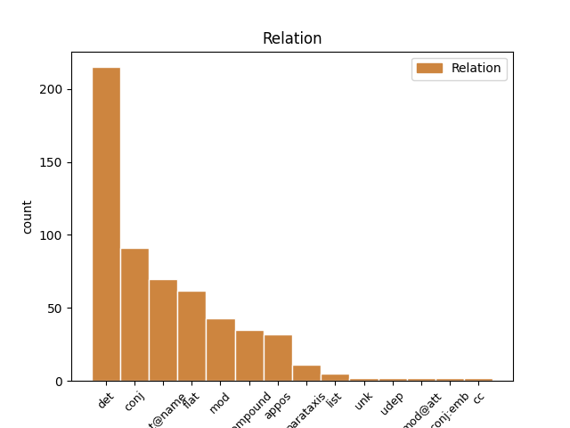
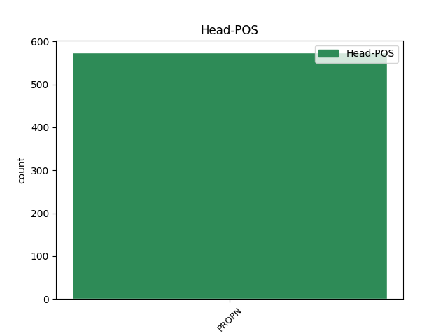
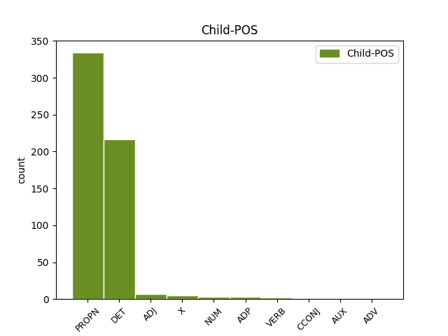

Distribution of features within this leaf



Agreement Rules sorted by frequency.
When the head token is PROPN and the dependent token is PROPN.
1 Diabarzh _ _ _ _ 0 _ _ _
2 moskeenn _ _ _ _ 0 _ _ _
3 ar _ _ _ _ 0 _ _ _
4 Sheikh _ _ _ _ 0 _ _ _
5 Lutfallah Lutfallah PROPN _ Case=NomAcc|Gender=Masc|Number=Sing 0 _ _ _
6 , _ _ _ _ 0 _ _ _
7 Ispahan Ispahan PROPN _ Case=NomAcc|Gender=Masc|Number=Sing 5 mod _ _
8 . _ _ _ _ 0 _ _ _
When the head token is PROPN and the dependent token is DET.
1 Unan _ _ _ _ 0 _ _ _
2 eus _ _ _ _ 0 _ _ _
3 doueed _ _ _ _ 0 _ _ _
4 pennañ _ _ _ _ 0 _ _ _
5 an an DET _ Definite=Def|Number=Sing|PronType=Art 6 det _ _
6 Henegiptiz Henegiptiz PROPN _ Case=NomAcc|Definite=Def|Gender=Fem|Number=Sing 0 _ _ _
7 eo _ _ _ _ 0 _ _ _
8 Amon _ _ _ _ 0 _ _ _
9 . _ _ _ _ 0 _ _ _
When the head token is PROPN and the dependent token is ADJ.
1 Gradišće _ _ _ _ 0 _ _ _
2 ( _ _ _ _ 0 _ _ _
3 kroateg kroateg ADJ _ Case=Nom|Definite=Def|Degree=Pos|Gender=Masc|Number=Sing 4 mod _ _
4 Burgenland Burgenland PROPN _ Case=Nom|Gender=Masc|Number=Sing 0 _ _ _
5 ) _ _ _ _ 0 _ _ _
When the head token is PROPN and the dependent token is X.
1 @@Quelle@@br _ _ _ _ 0 _ _ _
2 / _ _ _ _ 0 _ _ _
3 o _ _ _ _ 0 _ _ _
4 / _ _ _ _ 0 _ _ _
5 k _ _ _ _ 0 _ _ _
6 / _ _ _ _ 0 _ _ _
7 e _ _ _ _ 0 _ _ _
8 / _ _ _ _ 0 _ _ _
9 Okeania.html _ _ _ _ 0 _ _ _
10 Oseania _ _ _ _ 0 _ _ _
11 ( _ _ _ _ 0 _ _ _
12 e _ _ _ _ 0 _ _ _
13 gwer _ _ _ _ 0 _ _ _
14 ) _ _ _ _ 0 _ _ _
15 Oseania Oseania PROPN _ Number=Sing 0 _ _ _
16 ( _ _ _ _ 0 _ _ _
17 e _ _ _ _ 0 _ _ _
18 gwer gwer X _ Number=Sing 15 appos _ _
19 ) _ _ _ _ 0 _ _ _
When the head token is PROPN and the dependent token is NUM.
1 Ernő _ _ _ _ 0 _ _ _
2 Gerő _ _ _ _ 0 _ _ _
3 a _ _ _ _ 0 _ _ _
4 yeas _ _ _ _ 0 _ _ _
5 e _ _ _ _ 0 _ _ _
6 penn _ _ _ _ 0 _ _ _
7 Strollad _ _ _ _ 0 _ _ _
8 Komunour _ _ _ _ 0 _ _ _
9 Hungaria _ _ _ _ 0 _ _ _
10 da _ _ _ _ 0 _ _ _
11 heul _ _ _ _ 0 _ _ _
12 Mátyás _ _ _ _ 0 _ _ _
13 Rákosi _ _ _ _ 0 _ _ _
14 d'an _ _ _ _ 0 _ _ _
15 18 _ _ _ _ 0 _ _ _
16 Gouere Gouere PROPN _ Case=Nom|Number=Sing|Number[psed]=None|Number[psor]=None|Person[psor]=None 0 _ _ _
17 1956 1956 NUM _ Case=Nom|Number=Sing|Number[psed]=None|Number[psor]=None|Person[psor]=None 16 flat@name _ _
18 . _ _ _ _ 0 _ _ _
When the head token is PROPN and the dependent token is ADP.
1 An an ADP _ Definite=Def|Number=Sing|PronType=Art 2 det _ _
2 Aradennad Aradennad PROPN _ Case=NomAcc|Gender=Masc|Number=Sing 0 _ _ _
3 Valkanek _ _ _ _ 0 _ _ _
4 a _ _ _ _ 0 _ _ _
5 red _ _ _ _ 0 _ _ _
6 a _ _ _ _ 0 _ _ _
7 - _ _ _ _ 0 _ _ _
8 dreuz _ _ _ _ 0 _ _ _
9 Bulgaria _ _ _ _ 0 _ _ _
10 e _ _ _ _ 0 _ _ _
11 haternoz _ _ _ _ 0 _ _ _
12 " _ _ _ _ 0 _ _ _
13 Traonien _ _ _ _ 0 _ _ _
14 ar _ _ _ _ 0 _ _ _
15 Roz _ _ _ _ 0 _ _ _
16 " _ _ _ _ 0 _ _ _
17 . _ _ _ _ 0 _ _ _
When the head token is PROPN and the dependent token is VERB.
1 Pelec'h pelec PROPN _ Gender=Com|Number=Sing 0 _ _ _
2 e _ _ _ _ 0 _ _ _
3 vez veze VERB _ Mood=Ind|Number=Sing|Person=3|Tense=Pres|VerbForm=Fin 1 conj _ _
4 kaozeet _ _ _ _ 0 _ _ _
5 : _ _ _ _ 0 _ _ _
When the head token is PROPN and the dependent token is ADV.
1 Akwitania Akwitania PROPN _ Case=Nom|Gender=Neut|Number=Plur 0 _ _ _
2 a _ _ _ _ 0 _ _ _
3 zo zo ADV _ Case=Nom|Gender=Neut|Number=Plur 1 conj _ _
4 : _ _ _ _ 0 _ _ _
When the head token is PROPN and the dependent token is AUX.
1 Spittal Spittal PROPN _ Case=Nom|Gender=Masc|Number=Sing 0 _ _ _
2 an _ _ _ _ 0 _ _ _
3 der _ _ _ _ 0 _ _ _
4 Drau _ _ _ _ 0 _ _ _
5 ( _ _ _ _ 0 _ _ _
6 sloveneg _ _ _ _ 0 _ _ _
7 : _ _ _ _ 0 _ _ _
8 Špital _ _ _ _ 0 _ _ _
9 ob _ _ _ _ 0 _ _ _
10 Dravi _ _ _ _ 0 _ _ _
11 ) _ _ _ _ 0 _ _ _
12 , _ _ _ _ 0 _ _ _
13 diazezet _ _ _ _ 0 _ _ _
14 war sein AUX _ Mood=Ind|Number=Sing|Person=3|Tense=Past|VerbForm=Fin 1 mod _ _
15 ribl _ _ _ _ 0 _ _ _
16 an _ _ _ _ 0 _ _ _
17 Drava _ _ _ _ 0 _ _ _
18 er _ _ _ _ 0 _ _ _
19 bloavezh _ _ _ _ 0 _ _ _
20 1191 _ _ _ _ 0 _ _ _
21 war _ _ _ _ 0 _ _ _
22 urzh _ _ _ _ 0 _ _ _
23 kont _ _ _ _ 0 _ _ _
24 Otto _ _ _ _ 0 _ _ _
25 II _ _ _ _ 0 _ _ _
26 von _ _ _ _ 0 _ _ _
27 Ortenburg _ _ _ _ 0 _ _ _
28 , _ _ _ _ 0 _ _ _
29 a _ _ _ _ 0 _ _ _
30 zo _ _ _ _ 0 _ _ _
31 ur _ _ _ _ 0 _ _ _
32 gêr _ _ _ _ 0 _ _ _
33 e _ _ _ _ 0 _ _ _
34 Karintia _ _ _ _ 0 _ _ _
35 , _ _ _ _ 0 _ _ _
36 Aostria _ _ _ _ 0 _ _ _
37 . _ _ _ _ 0 _ _ _
When the head token is PROPN and the dependent token is CCONJ.
1 Med _ _ _ _ 0 _ _ _
2 bon _ _ _ _ 0 _ _ _
3 petra _ _ _ _ 0 _ _ _
4 é é CCONJ _ Gender=Masc|Number=Sing|Person=3 6 cc _ _
5 an _ _ _ _ 0 _ _ _
6 Anglichen Anglichen PROPN _ Case=NomAcc|Gender=Masc|Number=Sing 0 _ _ _
7 a _ _ _ _ 0 _ _ _
8 teu _ _ _ _ 0 _ _ _
9 d'ober _ _ _ _ 0 _ _ _
10 o _ _ _ _ 0 _ _ _
11 mistri _ _ _ _ 0 _ _ _
12 var _ _ _ _ 0 _ _ _
13 ar _ _ _ _ 0 _ _ _
14 wiki _ _ _ _ 0 _ _ _
15 bzh _ _ _ _ 0 _ _ _
16 . _ _ _ _ 0 _ _ _
Disagree Examples:
1 Un _ _ _ _ 0 _ _ _
2 taol _ _ _ _ 0 _ _ _
3 - _ _ _ _ 0 _ _ _
4 stad _ _ _ _ 0 _ _ _
5 a _ _ _ _ 0 _ _ _
6 oe _ _ _ _ 0 _ _ _
7 graet _ _ _ _ 0 _ _ _
8 e _ _ _ _ 0 _ _ _
9 1876 _ _ _ _ 0 _ _ _
10 dindan _ _ _ _ 0 _ _ _
11 levezon _ _ _ _ 0 _ _ _
12 luskad _ _ _ _ 0 _ _ _
13 an _ _ _ _ 0 _ _ _
14 adkempennerien _ _ _ _ 0 _ _ _
15 a _ _ _ _ 0 _ _ _
16 veze _ _ _ _ 0 _ _ _
17 graet _ _ _ _ 0 _ _ _
18 an an DET _ Definite=Def|Number=Sing|PronType=Art 19 det _ _
19 Otomaned _ PROPN _ Case=NomAcc|Gender=Masc|Number=Plur 0 _ _ _
20 yaouank _ _ _ _ 0 _ _ _
21 eus _ _ _ _ 0 _ _ _
22 outo _ _ _ _ 0 _ _ _
23 . _ _ _ _ 0 _ _ _
1 Kampionez _ _ _ _ 0 _ _ _
2 an an DET _ Definite=Def|Number=Sing|PronType=Art 3 det _ _
3 Izelvroioù _ PROPN _ Case=NomAcc|Gender=Masc|Number=Plur 0 _ _ _
4 eo _ _ _ _ 0 _ _ _
5 abaoe _ _ _ _ 0 _ _ _
6 miz _ _ _ _ 0 _ _ _
7 Gwengolo _ _ _ _ 0 _ _ _
8 2005 _ _ _ _ 0 _ _ _
9 . _ _ _ _ 0 _ _ _
1 Pa _ _ _ _ 0 _ _ _
2 teuas _ _ _ _ 0 _ _ _
3 an an DET _ Definite=Def|Number=Sing|PronType=Art 4 det _ _
4 Etruskaned Etruskan PROPN _ Case=NomAcc|Gender=Masc|Number=Plur 0 _ _ _
5 gant _ _ _ _ 0 _ _ _
6 mennozhioù _ _ _ _ 0 _ _ _
7 aloubiñ _ _ _ _ 0 _ _ _
8 e _ _ _ _ 0 _ _ _
9 klaskas _ _ _ _ 0 _ _ _
10 an _ _ _ _ 0 _ _ _
11 Osked _ _ _ _ 0 _ _ _
12 sevel _ _ _ _ 0 _ _ _
13 un _ _ _ _ 0 _ _ _
14 emglev _ _ _ _ 0 _ _ _
15 gant _ _ _ _ 0 _ _ _
16 ar _ _ _ _ 0 _ _ _
17 Gresianed _ _ _ _ 0 _ _ _
18 o _ _ _ _ 0 _ _ _
19 doa _ _ _ _ 0 _ _ _
20 travadennoù _ _ _ _ 0 _ _ _
21 e _ _ _ _ 0 _ _ _
22 pastell _ _ _ _ 0 _ _ _
23 - _ _ _ _ 0 _ _ _
24 vro _ _ _ _ 0 _ _ _
25 Napoli _ _ _ _ 0 _ _ _
26 , _ _ _ _ 0 _ _ _
27 met _ _ _ _ 0 _ _ _
28 aloubet _ _ _ _ 0 _ _ _
29 e _ _ _ _ 0 _ _ _
30 oe _ _ _ _ 0 _ _ _
31 an _ _ _ _ 0 _ _ _
32 takad _ _ _ _ 0 _ _ _
33 gant _ _ _ _ 0 _ _ _
34 ar _ _ _ _ 0 _ _ _
35 Samnited _ _ _ _ 0 _ _ _
36 er _ _ _ _ 0 _ _ _
37 Vvet _ _ _ _ 0 _ _ _
38 kantved _ _ _ _ 0 _ _ _
39 kt _ _ _ _ 0 _ _ _
40 JK _ _ _ _ 0 _ _ _
41 . _ _ _ _ 0 _ _ _
1 Kartenn Kartenn PROPN _ Case=Nom|Gender=Fem|Number=Plur 0 _ _ _
2 Tirol Tirol PROPN _ Case=Nom|Gender=Neut|Number=Sing 1 appos _ _
3 ( _ _ _ _ 0 _ _ _
4 1888 _ _ _ _ 0 _ _ _
5 ) _ _ _ _ 0 _ _ _
6 Kartenn _ _ _ _ 0 _ _ _
7 Tirol _ _ _ _ 0 _ _ _
8 ( _ _ _ _ 0 _ _ _
9 1888 _ _ _ _ 0 _ _ _
10 ) _ _ _ _ 0 _ _ _
1 Kartenn _ _ _ _ 0 _ _ _
2 Tirol _ _ _ _ 0 _ _ _
3 ( _ _ _ _ 0 _ _ _
4 1888 _ _ _ _ 0 _ _ _
5 ) _ _ _ _ 0 _ _ _
6 Kartenn Kartenn PROPN _ Case=Nom|Gender=Fem|Number=Plur 0 _ _ _
7 Tirol Tirol PROPN _ Case=Nom|Gender=Neut|Number=Sing 6 appos _ _
8 ( _ _ _ _ 0 _ _ _
9 1888 _ _ _ _ 0 _ _ _
10 ) _ _ _ _ 0 _ _ _